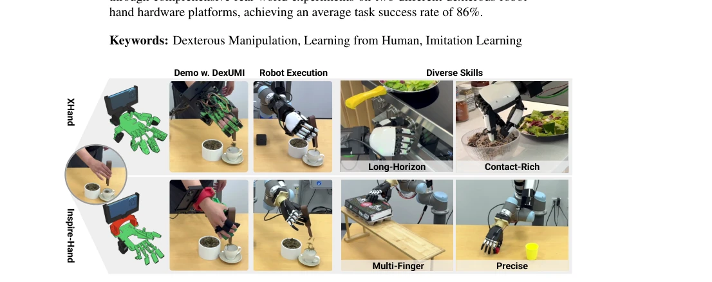
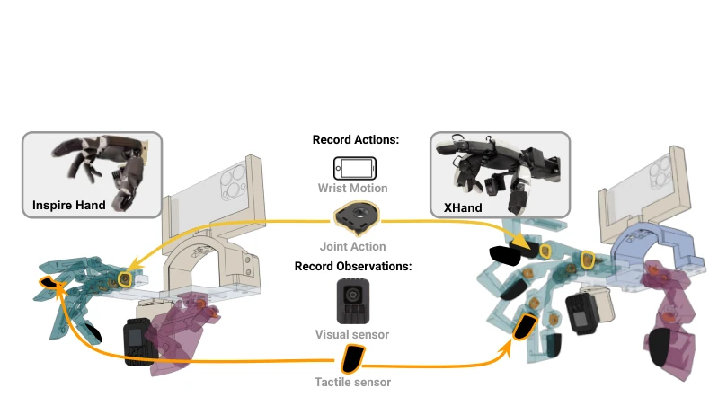
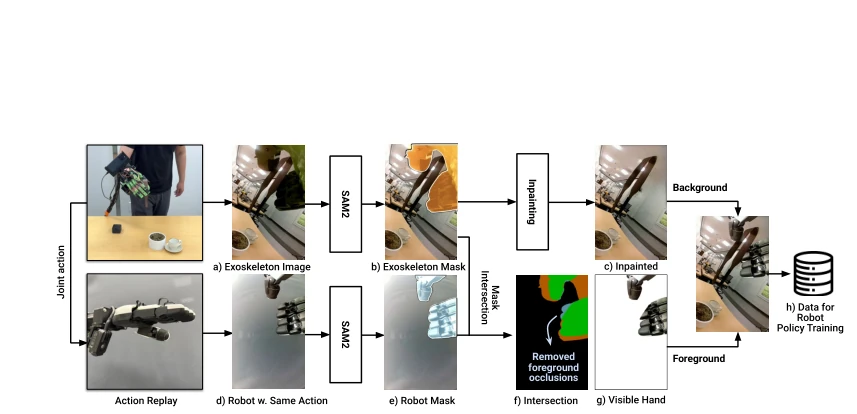
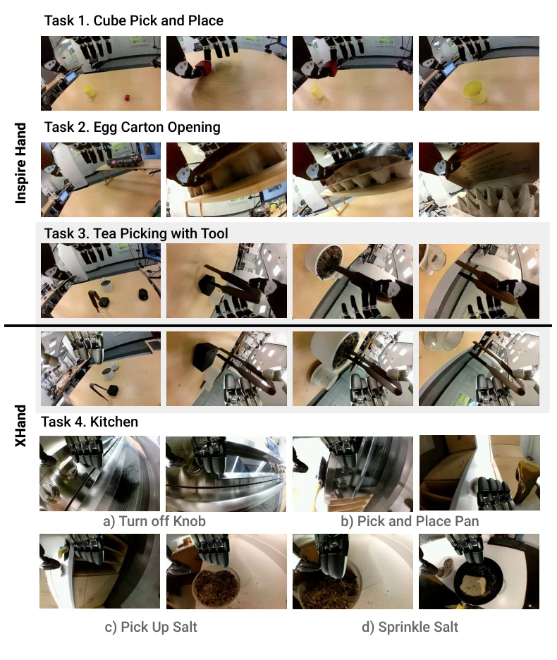
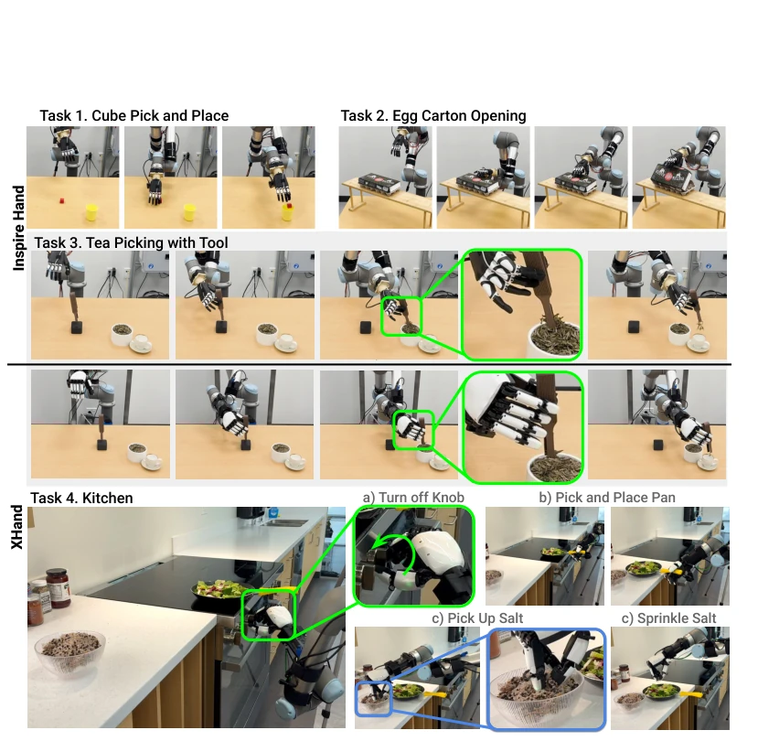
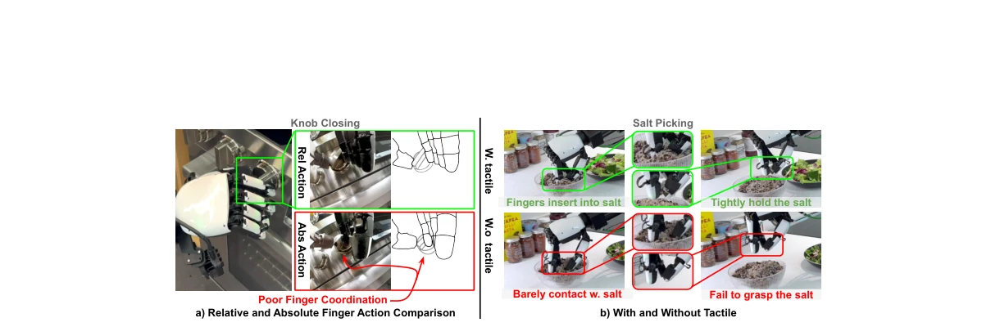
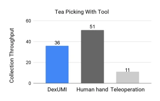
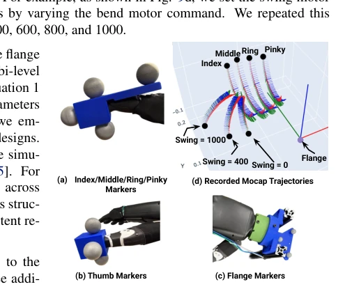
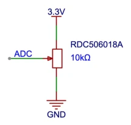
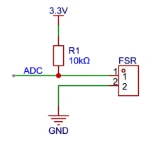

DexUMI: Using Human Hand as the Universal Manipulation Interface for Dexterous Manipulation
Mengda Xu, H. Zhang, Yifan Hou, Zhenjia Xu, L. Fan, Manuela Veloso abspdf
论文点评Review
这论文把“人手即接口”的概念玩到了极致，但代价是“定制西装”般的硬件适配。DexUMI 试图用外骨骼消除具身差距，省去了遥操作的空间错位，这点很性感。不过，外骨骼得为每个机械手单独调优，这哪是通用接口，分明是“一人一码”。视觉上的 inpainting 虽然用了 SAM2，但光照和遮挡处理还是有点“假”，毕竟真实机械手和人手的光影物理特性不同。而且 tactile 传感器漂移问题没彻底解决，数据质量全靠运气。总的来说，是个高效的 Demo，但离真正的“通用”还差得远，毕竟没人愿意天天戴着个 3D 打印的笨重外骨骼去拧瓶盖。
This paper pushes the concept of "hand-as-interface" to the extreme, but at the cost of hardware adaptation like a "custom suit". DexUMI attempts to eliminate the embodiment gap, saving the spatial misalignment of teleoperation, which is quite appealing. However, the exoskeleton requires individual tuning for each robotic hand; this is not a universal interface, but rather "one person, one code". Although visual inpainting uses SAM2, lighting and occlusion handling still feel a bit "artificial", since the photometric and physical properties of real robotic hands and human hands differ. Moreover, the tactile sensor drift issue is not fully resolved; data quality relies entirely on chance. Overall, it is an efficient Demo, but far from true "universality", after all, no one is willing to wear a bulky 3D-printed exoskeleton every day to twist bottle caps.
The core difficulty of dexterous manipulation lies in the "embodiment gap" (embodiment gap), i.e., the differences between human hands and robotic hands in kinematics, touch, and vision. Existing teleoperation (Teleoperation) schemes [21-35] often struggle to be adopted due to spatial observation mismatch and lack of direct haptic feedback. Although some works attempt to use wearable devices [1-3, 48-57], most target simple grippers and are difficult to adapt to multi-finger dexterous hands. Dexcap [58], although using motion capture gloves, still relies on retargeting (retargeting) and real robot data. This paper aims to answer: how to minimize the embodiment gap and make the human hand a universal interface? Existing methods either rely on simulation [6-20] or require real robot presence [38], lacking a flexible and high-fidelity data collection scheme.

Figure 1: DexUMI transfer dexterous human manipulation skills to various robot hand by using wearable exoskeletons and a data processing framework. We demonstrate DexUMI’s capability and effectiveness on both underactuated (e.g., Inspire) and fully-actuated (e.g., XHand) robot hand for a wide variety of manipulation tasks. Please see project website https://dex-umi.github.io/ for details.

Figure 2: Exoskeleton Design. The optimized exoskeleton design shares the same joint-to-fingertip position mapping as the target robot hand while maintaining the wearability. The exoskeletons utilizes the encoder to precisely capture the joint action and 150° DFoV camera to record the information-rich visual observation. An iPhone is rigidly mounted to track the wrist pose through the ARKit.
DexUMI includes hardware and software two-layer adaptation. On the hardware side, a dedicated exoskeleton is designed; by optimizing the frame to adjust link lengths and joint positions, the exoskeleton fingertip workspace (workspace) matches the target robotic hand, while ensuring wearability (wearability). Sensor integration includes joint encoders (Alps), wrist ARKit tracking, under-wrist wide-angle camera, and fingertip tactile sensors (same model as the robotic hand). On the software side, a visual processing pipeline is built: 1. Segment human hand and exoskeleton using SAM2 [65]; 2. Inpaint background using ProPainter [66]; 3. Replay actions on real robotic hand to obtain robotic hand video; 4. Perform occlusion-aware compositing (occlusion-aware compositing) based on mask intersection to replace human hand with robotic hand. Policy learning adopts imitation learning; input is processed visual and tactile data, output is relative finger trajectories.

Figure 4: Bridging the Visual Gap. To convert the visual observation into policy training data, we first segment the exoskeleton using SAM2 (b) and inpaint the missing background (c). The corresponding joint action (a) is replayed on the dexterous hand to obtain the robot hand image (d). SAM2 is applied to obtain the robot mask (e). The intersection (f) of the exoskeleton mask (b) and robot mask (e) identifies the visible part of the hand during interaction. Finally, we replace pixels in the inpainted background (c) with the visible robot hand (g).

Figure 8: Inpainting Results. The visual observations in the original collected dataset contain exoskeletons and human hands. The software adaptation layer replaces these pixels with corresponding robot hand images while preserving the natural occlusion relationships during hand-object interactions. Please see project website https://dex-umi.github.io for details.
Tested on Inspire (underactuated) and XHand (fully actuated) with four tasks: Cube, Egg Carton, Tea, Kitchen. DexUMI average success rate 86%, efficiency improved 3.2 times compared to teleoperation. Ablation experiments show that relative trajectory (Relative trajectory) is more robust than absolute trajectory, and can better utilize noisy tactile feedback. However, tactile sensors drift under high pressure, causing performance degradation in some tasks. Although visual inpainting can generate high-fidelity images, lighting consistency still has flaws. Overall, it proves the effectiveness of the framework in long-horizon, multi-finger contact tasks, but hardware adaptation cost is high.

Figure 5: Policy Rollout: We evaluate DexUMI’s capabilities across challenging real-world tasks. The Cube task tests basic picking precision. The Egg Carton task evaluates multi-finger coordination. The Tea Picking task assesses performance on contact-rich manipulation requiring millimeter-level fine-grained fingertip ac- tions. Finally, the Kitchen task tests capabilities on long-horizon high-precision actions to manipulate a knob, move a pan using both the side of thumb and index finger (beyond just fingertips), and utilize tactile sensing for visually challenging salt picking tasks.

Figure 6: Comparisons. a) The policy outputs relative hand actions yield more precise action and demonstrate better multi-finger coordination. Note, we draw a sketch for the knob closing for better visualization. b) Even with noisy tactile sensor reading, the tactile significantly improve tasks which is visually challenging.

Figure 7: Efficiency: Collection throughput (CT) within 15-minute. Though DexUMI still slower than bare hand, it achieves sig- nificant higher efficiency than teleportation.
其他图片Other Figures

Figure 9: Inspire Mocap: We use motion capture sys- tem to record fingertips trajectories in the flange coor- dinate. We attached marker on fingers and flange to capture the fingertip pose in flange coordinate.

Figure 10: Joint Encoder Circuit: The ro- tary sensor acts as a variable resistor with three output pins. As it rotates with the joint, the voltage on the ADC line changes approx- imately linearly.

Figure 11: Voltage Divider Circuit: This simple voltage divider circuit converts the resistance change of the FSR sensor into an analog voltage on the ADC line.